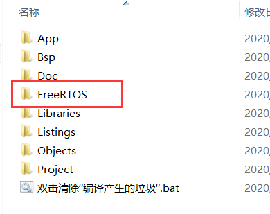
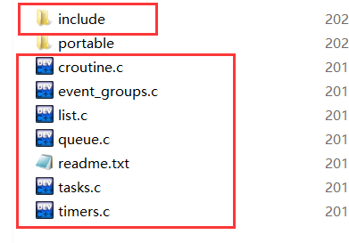
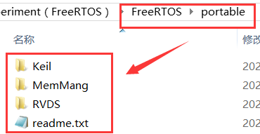
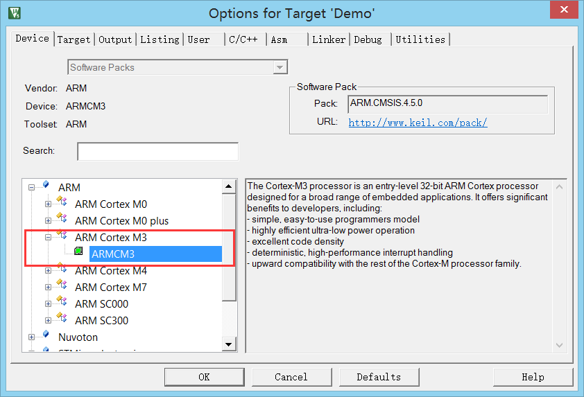

在移植之前，首先说明一下，该篇章，包括之后的文章都是建立在 CM-3 处理器上（用之前写 STM32 笔记的 STM32F103VET6），并且是用 FreeRTOS 的 V9.0.0 版本的核心文件进行移植，我们只需要把原有的 STM32 基础工程（STM32 的教程链接 ☜）二次添加我们所需的 FreeRTOS 核心文件就可以了
1、开发环境：Keil uVision5 V5.21
2、ST 外设标准固件库： V3.5
3、FreeRTOS 版本库：V9.0.0
4、目标芯片：STM32F103VET6（Cotrex-M3）
5、下载调试工具：J-Link
# FreeRTOS 核心文件提取
在上一篇 FreeRTOS 篇章之官方源码文档分析 已经分析出我们真正需要的文件是在 FreeRTOSv9.0.0/FreeRTOS 文件中，那么我们就去提取出需要的东西。
先在工程主目录上建立一个名为 FreeRTOS 的文档

再在下载下来的 FreeRTOSv9.0.0\FreeRTOS\Source 文件夹中把下图的这几个文件放进到工程的文档中，而这些零散的源文件我们创一个 src 文档来对它们进行管理，具体看后面移植完的文件结构分布图：

至于 portable 文档里面的内容，我们只需拿我们需要的接口就好了，全部拷贝文件太大了，不符合轻量级这个要求；所以进入 FreeRTOSv9.0.0\FreeRTOS\Source\portable 文件夹中，你可以发现有好多以编译器命名的文档，由于我们的开发环境是在 Keil 中的，所以我们要使用里面的 Keil 文档的内容，再让我们进去文档里面瞅瞅有些啥？进去你会发现只有一个 See also the RVDS directory.txt 文本，他叫我们查看 RVDS 这个目录，那我们就进去看看呗，看下图：

这下可以了，有支持我们的运行的接口，那就把 RVDS 这个目录复制过去呗
其中，我们还需要把 FreeRTOS/Source/portable/MemMang 目录也要复制过去，因为我们需要一个对堆进行分配的处理文件，而官方已经为我们提供了几个堆分配方案了，就是里面的几个 heap_x.c 文件
最后移植完得到下图这样：


最最最后，还要再把 FreeRTOSv9.0.0\FreeRTOS\Demo\CORTEX_STM32F103_Keil 路径下（因为官方 demo 中就这个文档最符合我们当前的移植工程）的 FreeRTOSConfig.h 文件复制到我们用户可修改的 App 文件夹下。
# 工程导入及属性修改
保持之前的工程不变，二次修改并添加下图的文件进入工程：

然后再改一下配置的属性为 ARMCM3， 配置属性不用改，是哪款 M3 芯片就选哪个芯片，例如用的是 stm32f103zet6，那就选这个：

好了，基本的工程移植就完成了，然后你可能会疑问为什么选 heap_4 这个堆分配方案的，这个在下一篇再进行解析